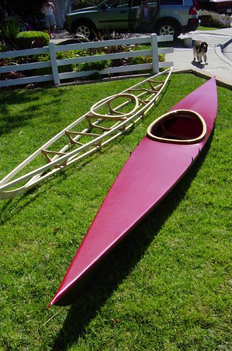

| Kayaking Links | Return to the Main Menu |
|  |
The Folding Aluminum Baidarka Homepage (DE) - The folding kayak designs and construction of Hendrik and Gerald Maroske of Germany, plus the work of other builders. Many folding kayak building methods and materials are covered in this site. Kayak Building Bulletin Board - A builder discussion forum covering all aspects of woodstrip, Stitch and Glue (S&G), and Skin on Frame (SOF) construction. If you are new to kayak building, this is the site for you. FoldingKayaks.org - Michael Edelman's site dedicated to commercially produced folding kayaks plus a discussion forum covering a wide range of folding kayak subjects. Baidarka Mailing List - A discussion forum for anyone interested in traditional Aleut SOF Baidarka construction. Wooden Canoe and Kayak Building (BE) - The wood canoes, kayaks, and paddles Erik van Woerkens has constructed. Tom's Homepages (NO) - Tom Bastiansen's homebuilt kayaks, as well as the kayaks of numerous builders worldwide. The Phillips Family Adventure - Steve Phillips' instructions for building a wooden frame non-folding version of the "Sea Pup" kayak. Marcel's Kayak Web - The woodstrip, traditional SOF, and folding kayaks built by Marcel Rodriguez. The Mathematician and the Kayak - A detailed account of Matt Noonan's "Sea Rider" construction project. Tony Olsen's Kayak Bytes - A Kayak Blog with great pics of Tony's woodstrip construction. PaddleAndOar - The homebuilt kayaks of Paul Montgomery plus numerous LINKs to kayaking resources. Colorado Motorcycle Rides - Various rides I have taken along the Colorado Front Range ( Rocky Mountains) |
| Wood frame Sea Pups by Steve Phillips | |